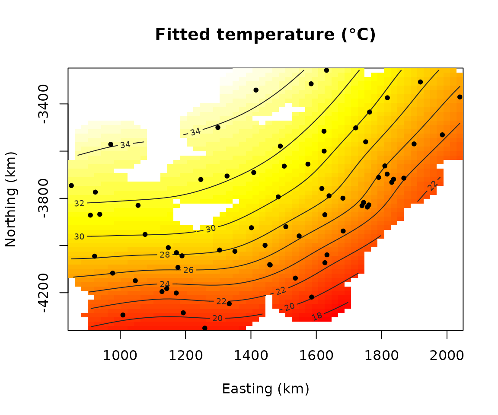

library("naboer")
library("dplyr")
library("tibble")
library("mgcv")
library("units")
have_spatial <- requireNamespace("sf", quietly = TRUE)
have_cubble <- have_spatial && requireNamespace("cubble", quietly = TRUE)
have_gratia <- have_cubble && requireNamespace("gratia", quietly = TRUE)
if (have_spatial) {
library("sf")
}
if (have_cubble) {
library("cubble")
}
if (have_gratia) {
library("gratia")
library("ggplot2")
}Use a distance window to assess observations individually while leaving nearby observations out of the training data. Use spatial blocks to assess all observations in an area together. You can also add a distance buffer around the observations in each assessment block.
Install sf to work with station geometries. A standard
naboer installation includes units to specify distances.
For raster data, take the locations and values of the cells used for
modelling and represent those locations as sf points with
the raster’s coordinate reference system. If you already have fold
memberships, supply their row numbers with
custom_folds().
Choose smoothness for spatial data
Suppose you want to map daily maximum temperature where weather
stations are sparse. When choosing how smooth the map should be, you can
score the prediction at each station after leaving out that station and
nearby stations. Here we use records from Victoria and New South Wales,
Australia, on 15 January 2018. The data come from the Global Historical
Climatology Network Daily. Install cubble to use its copy
of the data and run this example. Data
documentation, cubble
paper.
Use dplyr to keep one row per station and retain
stations with both temperature and elevation recorded.
weather <- historical_tmax |>
face_temporal() |>
filter(date == as.Date("2018-01-15")) |>
unfold(long, lat, elev) |>
as_tibble() |>
filter(is.finite(tmax), is.finite(elev))Project station locations onto the Australian Albers grid (EPSG:3577) so we can use distances in a common coordinate system. Save easting and northing in kilometres as predictors for the model.
weather_points <- st_as_sf(weather, coords = c("long", "lat"), crs = 4326) |>
st_transform(3577)
coordinates <- st_coordinates(weather_points) / 1000
weather_points$east_km <- coordinates[, "X"]
weather_points$north_km <- coordinates[, "Y"]Make one fold per station. Each fold scores the target station and leaves that station and all stations within 100 km out of the training data. The radius illustrates a prediction task with few nearby stations. For your own analysis, choose the distance to reflect where you expect to make predictions or how far residual dependence extends.
weather_folds <- neighbourhoods(weather_points,
spatial = spatial_window(set_units(100, "km"))
)
range(lengths(omission_indices(weather_folds)))
#> [1] 1 8Fit temperature as a function of elevation and a smooth surface over
easting and northing. as_nei() supplies the omitted and
scored rows to mgcv’s gam() for quadratic neighbourhood
cross-validation (QNCV). The Gaussian model here has quadratic loss, so
QNCV gives the same smoothing criterion as neighbourhood
cross-validation (NCV). Use fold_data() so the model data
have the row order expected by the exported indices. The folds determine
how gam() chooses the smoothing parameter. The returned
model uses all the rows at the chosen smoothness.
weather_data <- fold_data(weather_folds)
weather_formula <- tmax ~ elev + s(east_km, north_km, k = 20)
spatial_fit <- gam(weather_formula,
data = weather_data, method = "QNCV",
nei = as_nei(weather_folds, data = weather_data),
na.action = na.fail
)Fit the same model with method = "QNCV" and leave
nei unset to use mgcv’s default leave-one-out
criterion.
loo_fit <- gam(weather_formula,
data = weather_data, method = "QNCV", na.action = na.fail
)Use gratia’s edf() to compare the effective degrees of
freedom of the spatial smooth in each fit. Read the selected smoothing
parameters from the fitted models’ sp components.
tibble(
criterion = c("Leave-one-out", "Spatial neighbourhoods"),
smoothing_parameter = c(unname(loo_fit$sp), unname(spatial_fit$sp)),
effective_degrees_of_freedom = c(edf(loo_fit)$.edf, edf(spatial_fit)$.edf)
)
#> # A tibble: 2 × 3
#> criterion smoothing_parameter effective_degrees_of_freedom
#> <chr> <dbl> <dbl>
#> 1 Leave-one-out 0.0485 14.5
#> 2 Spatial neighbourhoods 0.210 9.90Here the spatial neighbourhoods select a smoother surface, with about 10 effective degrees of freedom compared with about 14.5 under leave-one-out.
Use gratia to predict maximum temperature across a grid
at the median station elevation. Use too_far() to mask grid
points farther than 0.1 from the nearest station after scaling each
coordinate to the interval from 0 to 1.
prediction_grid <- data_slice(spatial_fit,
east_km = evenly(east_km, n = 60),
north_km = evenly(north_km, n = 60),
elev = median(weather_data$elev)
)
temperature <- add_fitted(prediction_grid, spatial_fit,
value = "fitted_tmax", type = "response"
)
outside <- too_far(
temperature$east_km, temperature$north_km,
weather_data$east_km, weather_data$north_km, dist = 0.1
)
temperature$fitted_tmax[outside] <- NA_real_Map the fitted temperatures with ggplot2 and mark the
weather stations. The contours show locations with the same predicted
maximum temperature.
ggplot(temperature, aes(east_km, north_km)) +
geom_raster(aes(fill = fitted_tmax)) +
geom_contour(aes(z = fitted_tmax), colour = "white", alpha = 0.65, na.rm = TRUE) +
geom_point(data = weather_data, shape = 21, size = 1.6, fill = "white") +
scale_fill_viridis_c(na.value = "transparent") +
coord_equal() +
labs(x = "Easting (km)", y = "Northing (km)", fill = "Fitted maximum\ntemperature (°C)") +
theme_minimal()
Assessing individual sites
Define a 200-metre window. You can specify the distance before supplying any geometry.
site_window <- spatial_window(set_units(200, "m"))Create six sites on a straight line in a projected coordinate reference system (CRS) with coordinates in metres.
sites <- st_as_sf(
tibble(
site = letters[1:6], east = c(0, 100, 500, 1000, 2000, 3000), north = 0
),
coords = c("east", "north"), crs = 32632
)Use the window to construct folds. Each fold assesses one site and omits that site and any others within 200 metres when fitting the model.
site_folds <- neighbourhoods(sites, spatial = site_window)Compare the first three folds. Sites a and
b are 100 metres apart, so both are omitted from training
when either is assessed. Site c is more than 200 metres
from every other site, so its fold omits only site c.
as_tibble(site_folds, folds = 1:3)
#> # A tibble: 3 × 6
#> fold n_assessment n_omission n_analysis n_buffer omitted_fraction
#> <chr> <dbl> <dbl> <dbl> <dbl> <dbl>
#> 1 1 1 2 4 1 0.333
#> 2 2 1 2 4 1 0.333
#> 3 3 1 1 5 0 0.167Distance windows use the original geometries, including lines and
polygons. Supply valid, non-empty geometries with a declared CRS. For
longitude and latitude, naboer uses the current spherical
or ellipsoidal distance setting in sf, as selected by
sf_use_s2().
Distance windows and block assignments use the stored coordinates. If
you want your design to use rounded locations, round the coordinates
before constructing the folds. fold_data() preserves any
sf precision attribute on the input.
Assessing spatial blocks
Split the sites into 500-metre square blocks and assess the
observations in one occupied block at a time. The origin
fixes the grid to the same anchor if you repeat the analysis on a subset
of these sites in the same CRS.
blocks <- spatial_folds(sites, size = set_units(500, "m"), origin = c(0, 0))Observations on either side of a block boundary can be close
together. Add a 100-metre buffer to omit nearby observations from
training. The n_buffer column counts observations left out
of training solely because of this buffer.
buffered <- buffer_folds(
blocks, spatial = spatial_window(set_units(100, "m"))
)
as_tibble(buffered)
#> # A tibble: 5 × 6
#> fold n_assessment n_omission n_analysis n_buffer omitted_fraction
#> <chr> <dbl> <dbl> <dbl> <dbl> <dbl>
#> 1 1 1 2 4 1 0.333
#> 2 2 2 3 3 1 0.5
#> 3 3 1 1 5 0 0.167
#> 4 4 1 1 5 0 0.167
#> 5 5 1 1 5 0 0.167Square cell boundaries pass through origin = c(x, y).
With shape = "hexagonal", a cell is centred on the anchor
and size is the distance between opposite edges. The
default anchor is calculated from the data extent.
You can also supply your own polygons with regions. By
default, an observation that intersects several cells or touches a
shared boundary goes in the first matching cell. Generated grids are
ordered by row from south to north, with cells in each row ordered west
to east. Custom regions follow their supplied order. If the interiors of
custom regions overlap, use assignment to name a column
giving the region row number for each observation. Each assigned region
must intersect its observation. The observations keep their original
geometries.
To generate blocks from longitude and latitude,
spatial_folds() projects the data onto a local azimuthal
equidistant projection centred on the study area. For large study areas,
supply an appropriate projected grid_crs. You must set
grid_crs if the longitude range exceeds 180 degrees, as can
happen where a study area crosses the 180th meridian. Geographic
distance windows work across this boundary. Block widths are measured in
the grid’s projection, so their surface distances may vary across a
large study area.
Before creating a grid, naboer checks its estimated
memory use against the naboer.max_bytes option, which
defaults to 1 GiB. A larger cell size or a smaller study extent reduces
the number of cells.
Repeated station observations
Suppose each site has one observation per day for ten days. Use
site as the series key and date as the time
index.
observations <- sites[rep(seq_len(nrow(sites)), each = 10), ]
observations$date <- rep(as.Date("2024-01-01") + 0:9, nrow(sites))Reuse the 200-metre spatial window and add a one-day window on either
side of the assessment date. With combine = "intersection",
a record is omitted from training if it is close in both space and time.
With combine = "union", closeness in either dimension is
sufficient.
day_window <- temporal_window(time_span(1, "days"))
joint <- neighbourhoods(
observations,
key = site, index = date,
spatial = site_window, temporal = day_window, combine = "intersection"
)Inspect an assessment on the first day at site a, the
fifth day at site b and the last day at site
f. The folds at the nearby sites a and
b omit records from both sites. The fold at site
f omits records from that site alone.
as_tibble(joint, folds = c(1, 15, 60))
#> # A tibble: 3 × 6
#> fold n_assessment n_omission n_analysis n_buffer omitted_fraction
#> <chr> <dbl> <dbl> <dbl> <dbl> <dbl>
#> 1 1 1 4 56 3 0.0667
#> 2 15 1 6 54 5 0.1
#> 3 60 1 2 58 1 0.0333Temporal windows can span stations by default. Use
within = "key" to limit the temporal window to each
station, or .by if both spatial and temporal windows should
be confined to independent groups. Distances between fixed stations are
reused across dates. If sites move, each observation’s recorded geometry
determines its neighbours.
To assess blocks instead of individual observations, use
spatiotemporal_folds(). mode = "crossed"
assesses the observations in a spatial block during a time block.
mode = "space" holds out spatial blocks across all dates,
and mode = "time" holds out time blocks across
stations.
Cubble
For spatiotemporal data, use a cubble to keep measurements linked to their site locations. Put the measured values in a table with a site and date for each record, then link them to the site geometries.
values <- st_drop_geometry(observations)
values$value <- seq_len(nrow(values))
cube <- make_cubble(
spatial = sites, temporal = values, key = site, index = date
)neighbourhoods() reads the key and index from the
cubble. Apply the same windows as before, then inspect the data in the
row order used by the folds.
cube_folds <- neighbourhoods(
cube, spatial = site_window, temporal = day_window, combine = "intersection"
)
head(fold_data(cube_folds))
#> # A tibble: 6 × 6
#> site date value x y geometry
#> <chr> <date> <int> <dbl> <dbl> <POINT [m]>
#> 1 a 2024-01-01 1 0 0 (0 0)
#> 2 a 2024-01-02 2 0 0 (0 0)
#> 3 a 2024-01-03 3 0 0 (0 0)
#> 4 a 2024-01-04 4 0 0 (0 0)
#> 5 a 2024-01-05 5 0 0 (0 0)
#> 6 a 2024-01-06 6 0 0 (0 0)You can pass a nested spatial cubble or its long temporal form. In
both cases, fold_data() returns one row per measurement
with its original site geometry, including polygons. If the site data
contain several geometry columns, the design uses the active geometry.
The naboer_source attribute identifies the original site
row and position within the series for nested data, or the original
observation row for long data. Measurements with missing coordinates
remain available for purely temporal folds.
If several columns together identify a series, create a combined key
before constructing a cubble. With an sf object or tibble,
you can select the separate columns directly with key.